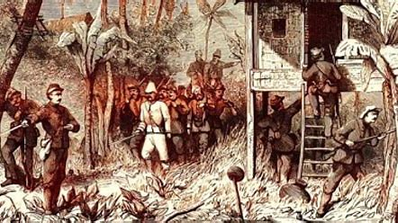

SEJARAH INDONESIA
PERANG SURABAYA
Pertempuran Surabaya merupakan pertempuran antara pasukan pejuang Indonesia yang diorganisir oleh pasukan anggota eks. Pembela Tanah Air yang dibentuk oleh Pasukan Jepang dan Polisi Istimewa di waktu masa Pendudukan Jepang di Indonesia (yang dulunya Hindia Belanda) pada saat itu, yang bertujuan untuk mencegah pasukan sekutu pasca Jepang menyerah tanpa syarat kepada sekutu di Perang Pasifik yang mendarat di kota Surabaya yang terdiri dari pasukan Kekaisaran Britania dengan sukarelawan Persemakmuran Britania yakni Angkatan Darat India Britania dengan mendapatkan dukungan khusus oleh tentara Kekaisaran Belanda. Puncaknya terjadi pada tanggal 10 November 1945. Pertempuran ini adalah perang pertama pasukan Indonesia dengan pasukan Sekutu setelah Proklamasi Kemerdekaan Indonesia dan satu pertempuran terbesar dan terberat dalam sejarah Revolusi Nasional Indonesia yang menjadi simbol nasional atas perlawanan Indonesia terhadap kolonialisme dan Imperialisme. Usai pertempuran ini, dukungan rakyat Indonesia dan dunia internasional terhadap perjuangan kemerdekaan Indonesia semakin kuat. 10 November diperingati setiap tahun sebagai Hari Pahlawan di Indonesia. Ketika pasukan Britania mendarat pada akhir Oktober 1945, Surabaya digambarkan sebagai "benteng bersatu yang kuat [di bawah Pemuda]". Pertempuran pecah pada 30 Oktober setelah komandan pasukan Britania, Brigadir A. W. S. Mallaby tewas dalam baku tembak . Britania melakukan serangan balasan punitif pada 10 November dengan bantuan pesawat tempur. Pasukan kolonial merebut sebagian besar kota dalam tiga hari, pasukan Republik yang minim senjata melawan selama tiga minggu, dan ribuan orang meninggal dunia ketika penduduk kota mengungsi ke pedesaan. Meskipun kalah dan kehilangan anggota dan persenjataan, pertempuran yang dilancarkan pasukan Republik membangkitkan semangat bangsa Indonesia untuk memperjuangkan kemerdekaannya dan menarik perhatian inter nasional. Belanda tidak lagi memandang Republik sebagai kumpulan pengacau tanpa dukungan rakyat. Pertempuran ini juga meyakinkan Britania untuk mengambil sikap netral dalam revolusi nasional Indonesia; beberapa tahun kemudian, Britania mendukung perjuangan Indonesia di PBB.
PERANG AMBARAWA

Palagan Ambarawa adalah sebuah peristiwa perlawanan Tentara Indonesia terhadap Tentara Inggris yang terjadi di Ambarawa, sebelah selatan Semarang, Jawa Tengah. Pada tanggal 20 Oktober 1945, tentara Sekutu di bawah pimpinan Brigadir Bethell mendarat di Semarang dengan maksud mengurus tawanan perang dan tentara Jepang yang berada di Jawa Tengah. Kedatangan sekutu ini diwakili dari pihak Tentara Inggris. Kedatangan Sekutu ini mulanya disambut baik, bahkan Gubernur Jawa Tengah Mr Wongsonegoro menyepakati akan menyediakan bahan makanan dan keperluan lain bagi kelancaran tugas Sekutu, sedang Sekutu berjanji tidak akan mengganggu kedaulatan Republik Indonesia.Namun, ketika pasukan Tentara Inggris telah sampai di Ambarawa dan Magelang untuk membebaskan para tawanan tentara Belanda, para tawanan tersebut malah dipersenjatai sehingga menimbulkan kemarahan pihak Indonesia. Insiden bersenjata timbul di kota Magelang, hingga terjadi pertempuran
BANDUNG LAUTAN API
Peristiwa Bandung Lautan Api adalah peristiwa kebakaran besar yang terjadi di Bandung, provinsi Jawa Barat, Indonesia pada 23 Maret 1946. Sekitar 200.000 penduduk Bandung membakar kediaman mereka sendiri dalam peristiwa tersebut, kemudian meninggalkan kota menuju pegunungan di daerah selatan Bandung. Hal ini dilakukan untuk mencegah tentara Sekutu yang dapat menggunakan kota Bandung sebagai markas strategis militer dalam Perang Kemerdekaan Indonesia. Peristiwa Bandung Lautan Api adalah peristiwa kebakaran besar yang terjadi di Bandung, provinsi Jawa Barat, Indonesia pada 23 Maret 1946. Sekitar 200.000 penduduk Bandung membakar kediaman mereka sendiri dalam peristiwa tersebut, kemudian meninggalkan kota menuju pegunungan di daerah selatan Bandung. Hal ini dilakukan untuk mencegah tentara Sekutu yang dapat menggunakan kota Bandung sebagai markas strategis militer dalam Perang Kemerdekaan Indonesia.
PERANG PADRI
Perang Padri (juga dikenal sebagai Perang Minangkabau) adalah perang yang terjadi dari tahun 1803 sampai 1837 di Sumatera Barat, Indonesia antara kaum Padri dan Adat. Kaum Padri adalah umat muslim yang ingin menerapkan Syariat Islam di negeri Minangkabau di Sumatera Barat. Sedangkan kaum Adat mencakup para bangsawan dan ketua-ketua adat di sana. Mereka meminta tolong kepada Belanda, yang kemudian ikut campur pada tahun 1821 dan menolong kaum Adat mengalahkan faksi Padri. Perang Padri dianggap dimulai pada tahun 1803, sebelum campur tangan Belanda, dan merupakan konflik yang pecah di negeri Minangkabau ketika kaum Padri mulai memberangus adat istiadat yang mereka anggap sebagai tidak Islami. Namun setelah pendudukan Kerajaan Pagaruyung oleh Tuanku Pasaman, salah satu pemimpin Padri pada tahun 1815, pada tanggal 21 Februari 1821, kaum bangsawan Minangkabau membuat kesepakatan dengan Belanda di Padang untuk melawan mereka memerangi kaum Padri.[1] Kaum Padri, seperti halnya para jihadis sezaman di Kekhalifahan Sokoto di Afrika Barat, adalah kaum puritan Islam yang telah menunaikan ibadah haji ke Makkah dan kembali dengan terinspirasi untuk membawa Al-Quran dan syariah ke posisi yang lebih besar pengaruhnya di Sumatera. Gerakan Padri terbentuk pada awal abad ke-19 dan berusaha untuk membersihkan budaya dari tradisi dan kepercayaan yang dipandang oleh para pengikutnya sebagai tidak Islami. Pada tahun 1820-an, Belanda belum mengkonsolidasikan kepemilikan mereka di beberapa bagian Hindia Belanda (kemudian menjadi Indonesia) setelah memperolehnya kembali dari Inggris. Hal ini terutama terjadi di pulau Sumatera, di mana beberapa daerah tidak berada di bawah kekuasaan Belanda sampai abad ke-20.
PERANG BANJAR
.Perang Banjar atau Perang Banjar-Barito atau Perang Kalimantan Selatan adalah perang perlawanan terhadap penjajahan kolonial Belanda di Kerajaan Banjar yang berlangsung hampir setengah abad (1859–1906), sehingga menjadikannya perang terlama di Nusantara. Jika dilihat coraknya, perlawanan dapat dibedakan antara perlawanan ofensif yang berlangsung dalam waktu relatif pendek (1859–1863), dan perlawanan defensif yang mengisi yang mengisi seluruh perjuangan selanjutnya (1863–1905/06). Konflik dengan Belanda sebenarnya sudah mulai sejak Belanda memperoleh hak monopoli dagang di Kesultanan Banjar. Dengan ikut campurnya Belanda dalam urusan kerajaan, kekalutan makin bertambah. Pada tahun 1785, Pangeran Nata yang menjadi wali putra mahkota, mengangkat dirinya menjadi raja dengan gelar Sultan Tahmidullah II (1761–1801) dan membunuh semua putra almarhum Sultan Muhammad. Pangeran Amir, satu-satunya pewaris tahta yang selamat, berhasil melarikan diri lalu mengadakan perlawanan dengan dukungan pamannya Gusti Kasim (Arung Turawe), tetapi gagal. Pangeran Amir (kakek Pangeran Antasari) akhirnya tertangkap dan dibuang ke Ceylon (kini Sri Langka)
PERANG BONE

Belanda pernah melancarkan ekspedisi ke Bone pada tahun 1824 dan 1825, dan pada tahun 1838, perjanjian Bungaya diperbaharui. Pada tahun-tahun setelahnya, kerenggangan mulai bertambah sementara hubungan perdagangan antara Makassar-Singapura mulai berkembang. Di pantai barat Sulawesi, penduduk Bugis yang tinggal di sana mulai membangkang meskipun sudah berulang kali Gubernur Sulawesi dan Taklukannya memprotes; GubJend. Jan Jacob Rochussen mengunjungi Bone pada tahun 1849 namun tidak berhasil mengakhiri ketegangan yang sedang terjadi. Atas hal ini, ia menulis dalam sebuah laporan bahwa perang dengan Bone akan dikumandangkan sebentar lagi karena orang Bone harus menisbatkan politik damai dari pemerintah atas kelemahan itu dan menunjukkan keinginan menguasai suatu tempat di Teluk Bone, agar negeri itu tetap mudah dikendalikan. Dalam masa-masa setelahnya, wacana melancarkan ekspedisi ke Bone muncul lebih dari sekali namun alasan politis dari berbagai kalangan selalu membuat realisasinya oleh pemerintah gagal. Gagasan ini juga diketahui oleh Sultan Bone, yang setelah itu memperbaharui hubungan lama dengan Kesultanan Soppeng dan Wajo (disebut sebagai Aliansi Tellumpoccoe) dalam masalah serangan gabungan melawan angkatan perang Belanda. Ketika ekspedisi tidak diadakan, orang Bone mengartikannya sebagai kelemahan dan ketakutan. Ekspedisi juga direncanakan oleh GubJend. Charles Ferdinand Pahud pada tahun 1857 namun niat itu tak terlaksana. Di saat yang sama, Sultan Aru Pugi mangkat dan digantikan oleh jandanya Besse Kajuara, yang dalam sebuah surat pendek terhadap pemerintah diketahui bahwa di sana ada upaya pemulihan hubungan kembali dan berharap bahwa kematian sultan yang bermusuhan akan menjadi awal perubahan ke arah yang lebih baik. Di akhir tahun 1857, gubernur memberitahukan bahwa Sultanah Bone memerintahkan pengibaran bendera Belanda terbalik di seluruh kapal dagang; selanjutnya para penguasa membangkang terhadap pemerintah dan di utara Distrik Pemerintahan Maros, para serdadu pribumi yang ditempatkan di gardu dekat Camba didorong untuk desersi.
PERANG PATTIMURA
Perang Pattimura adalah peperangan yang terjadi di wilayah Maluku. Pertempuran terjadi antara pasukan Pattimura dengan pasukan Belanda. Kapitan Pattimura memiliki nama asli Thomas Matulessy. Dalam perlawanan ini, ia memiliki beberapa teman yang sama-sama berjuang membela tanah air. Pada awal pertempuran, pasukan Pattimura selalu mendapatkan kemenangan. Namun, akhirnya ia dihukum gantung oleh Belanda. Perang ini mulai meletus pada tahun 1817. Kapitan Pattimura berlaku sebagai pimpinan perang dengan dibantu oleh beberapa pejuang lain, yaitu Christina Martha Tiahahu, Thomas Pattiwael, Anthony Reebok, serta Philip Latumahina. Serangan pertama kali dilancarkan oleh masyarakat Maluku pada tanggal 15 Mei 1817. Tempat yang pertama kali diserbu adalah Pos Perahu di Pelabuhan Porto. Hasil dari serangan pertama tersebut adalah hangusnya perahu-perahu milik Belanda. Kemudian, esok harinya pasukan Pattimura kembali melakukan perlawanan. Tempat yang diserang adalah Benteng Duurstede. Tidak lama, pasukan Pattimura berhasil mengepung tempat tersebut hingga menewaskan Residen Van Den Berg. Akhirnya Benteng Duurstede bisa jatuh ke tangan pasukan Pattimura.
PERANG BALI

Perang Bali I merupakan ekspedisi militer pertama yang dilancarkan Koninklijk Nederlandsch-Indisch Leger ke kerajaan Buleleng, Bali pada tahun 1846. Perang ini lahir sebagai langkah Hindia Belanda mewujudkan Pax Netherlandica (perdamaian di bawah Belanda) di nusantara. Upaya tersebut melahirkan perjanjian tahun 1941 dengan kerajaan Klungkung, Badung dan Buleleng. Salah satu isinya berbunyi: "Raja-raja Bali mengakui bahwa kerajaan-kerajaan di Bali berada di bawah pengaruh Belanda." Bali adalah salah satu pulau di Kepulauan Sunda yang berada di timur Jawa. Jarak bentang pulau ini 105 mil geografis dan berpenduduk 700.000 jiwa. Cornelis de Houtman pernah mendatangi pulau itu dan diterima baik namun dalam perkembangannya kesepahaman kurang terjalin. Pada tahun 1841 dan 1843, sebuah persetujuan diputuskan antara kerajaan setempat dan pemerintah Hindia Belanda tetapi penduduk Bali segera menunjukkan permusuhan. Khususnya Raja Buleleng berkali-kali melanggar perjanjian. Pemerintah Hindia Belanda mempermasalahkan tradisi Tawan Karang Bali, dan menjadikannya alasan untuk menyerang dan menghukum Bali. Tawan Karang adalah tradisi Bali, bahwa kapal beserta isinya yang karam dan terdampar di pesisir Bali adalah hak milik raja setempat. Pemerintah Hindia Belanda menganggap tradisi ini tidak dapat diterima dalam hukum internasional, dan tidak dapat membiarkannya karena daerah lain juga akan menunjukkan tanda-tanda perlawanan.
KONFLIK PAPUA

Konflik Papua adalah konflik di wilayah Papua, Indonesia. diawali pada tahun 1961, muncul keinginan Belanda untuk membentuk negara Papua Barat terlepas dari Indonesia, Langkah Belanda ini dilawan Presiden Soekarno dengan mendekatkan diri pada negara komunis terutama Uni Soviet. Sikap Soekarno ini membuat takut Belanda dan Presiden Amerika Serikat John F. Kennedy. Sebab jika itu dibiarkan maka Indonesia sangat mungkin menjadi negara komunis terbesar di Asia Tenggara. Ketakutan itu lalu membuat Belanda mengambil sikap untuk menyerahkan masalah Papua ke PBB. Dari dan melalui PBB, Belanda mengambil sikap untuk keluar dari Papua dan tidak jadi mengambil, merebut dan menjajah Papua lalu Papua diserahkan "kembali" ke Indonesia dengan syarat memberi kesempatan pada rakyat Papua untuk menentukan sikap sendiri atau referendum (Penentuan Pendapat Rakyat/PEPERA).
PERANG PENFUI
Pertempuran Penfui terjadi pada 9 November 1749 di kaki bukit Penfui, sekarang dekat Kupang. Tentara besar orang Topas dikalahkan oleh pasukan Perusahaan Hindia Belanda yang berjumlah lebih rendah setelah penarikan bekas sekutu Timor dari medan tempur, mengakibatkan kematian pemimpin Topas Gaspar da Costa. Setelah pertempuran, pengaruh Topas dan Portugis di Timor menurun, kemudian berujung pada pembentukan batas antara Timor Belanda dan Portugis yang kemudian menjadi perbatasan modern antara Timor Barat dan Timor Leste.